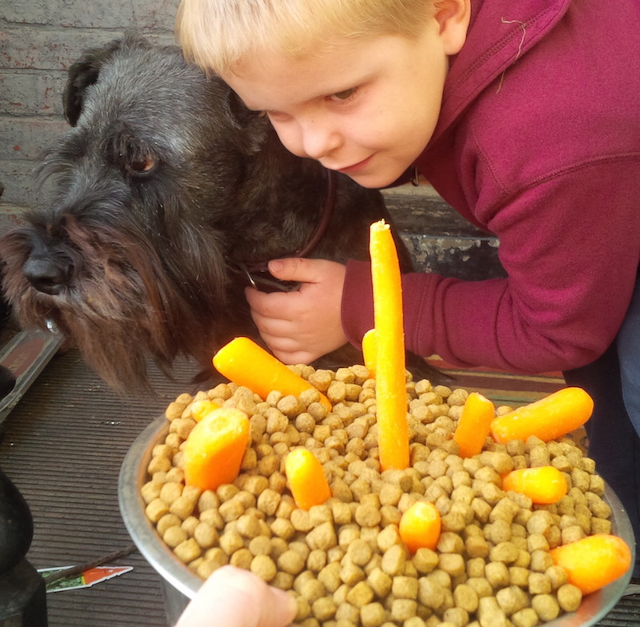

Take Playing Cards to Class
November 4, 2015
Classes are a great way in Ruby and other languages to emulate the real world. Why? Because things in the real world are messy, they don't fit into neat little packages of uniform size. Take my dog, Hazel. I cannot begin to describe her as an array.
Hazel = [12, 16, 18.5, "black", "arf"]
=> false
That code fails to convey the complexity that is my little dog. Even simple things, like a pack of playing cards defy such simple structures. Sure, playing cards have ranks from 2 to Ace. But then there are four different suits. And two different colors. And heaven help us from having to account for the Jacks with one eye showing and the ones with two eyes showing!
Enter Class
Classes are like containers for us to build that complexity of design and function. Not only can we define properties, we can define a variety of actions they can take, in the form of methods. So let's get started with that lowly deck of playing cards.
When you first open a new pack of cards, you're hit with the aroma of polymer on paper and the sight of all the royal entourage in perfect order. How quaint.
class PlayingCards
def initialize
@cards = %w[A 2 3 4 5 6 7 8 9 10 J Q K]
end
end
 Every deck has four suits. And we know that each suit has cards ranking from A to K (or 2 to A, if that's your preference. It is not mine.). So we don't need to assign the ranks four times, right? We can do it once and then assign that to the suits later.
Every deck has four suits. And we know that each suit has cards ranking from A to K (or 2 to A, if that's your preference. It is not mine.). So we don't need to assign the ranks four times, right? We can do it once and then assign that to the suits later.
def hearts
@cards
end
Hmm, that's going to be a problem when we have to define four different suits with the same set of cards. How's this?
def hearts
@cards.collect {|x| x.to_s + "-Hr"}
end
Ok, so now those hearts cards have a rank, AND we've marked them with a little heart designation, just like the colored pictures are painted on the real playing cards. So now we've created something that looks like the virgin deck of cards that comes out of the box. Everything in perfect order. Let's mess things up.
def make_deck
heart_stack = hearts
spade_stack = spades
diamond_stack = diamonds
club_stack = clubs
full_deck = heart_stack + spade_stack + diamond_stack + club_stack
full_deck.shuffle
end
Now we're getting into the action part with our methods. This method should be simple to understand. We want to combine all those stacks of suit cards into one big deck (full_deck) and shuffle them together. If you've ever tried to shuffle cards like the cool Vegas dealers, well this is much less frustrating.
Cool, now we have a shuffled deck of cards, and we can start playing solitaire, right? Boooring. I'm sitting here writing this by myself, I want to play cards WITH somebody. But with who? And with how many somebodies? Well we can accomodate the how many by adapating our initialize method above, to accept an argument.
def initialize(players)
@players = players
@cards = %w[A 2 3 4 5 6 7 8 9 10 J Q K]
end
Now we call the method and declare how many somebodies are playing. And this number we want to be an instance variable that is available throughout the class, because it's a useful thing to know. Each game we play may have a different number of players, so it's really important to set that at the start and have access to it.
We have our cards, we have our players. Now we need to put them together and to do that with DEAL. But how? There are as many card games as there are cards, and each game has its own way to deal a hand. To keep it simple, let's play Blackjack, which starts with two cards to each player. And if we think about, dealing is one method. Dealing a blackjack hand is kind of unique. So we'll create two methods that work together.
def new_game
@new_deck = make_deck
@players.times do
deal_blackjack
end
end
def deal_blackjack
hand = []
2.times do
hand << @new_deck.shift
end
p hand
end
We can see how things are getting intertwined here, and that's ok because that's how the real world tends to look, right? So we have that @players variable coming down here, which sets how many hands we need to deal. And we have a @new_deck variable which we'll have to stick in the Class above, so it's available throughout the game instance. That deal_blackjack method is hard-coded to deal two cards, because that's the game. A poker method might have 5.times do ... instead. And in that case, we could alter our initialize method up top, to add a new parameter where we could define which card game we're playing ...
Maybe I'll do that next time. I'm sitting on a pair of Kings, and I think I can beat the dealer!